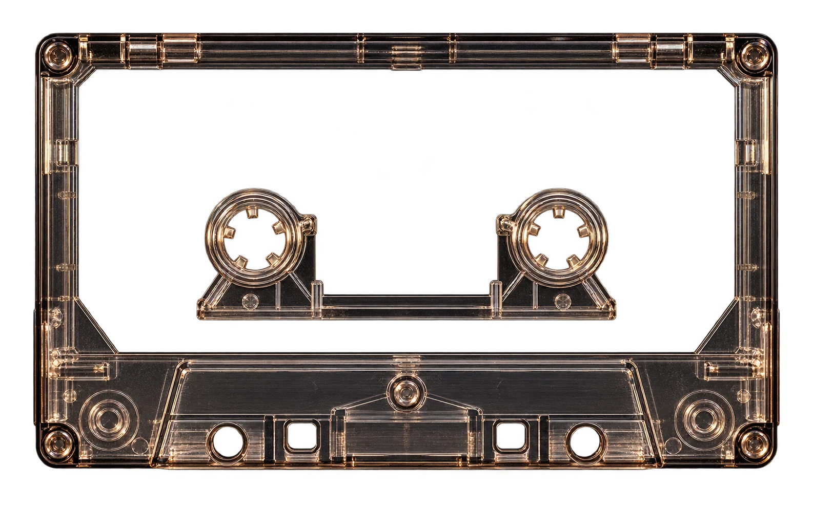
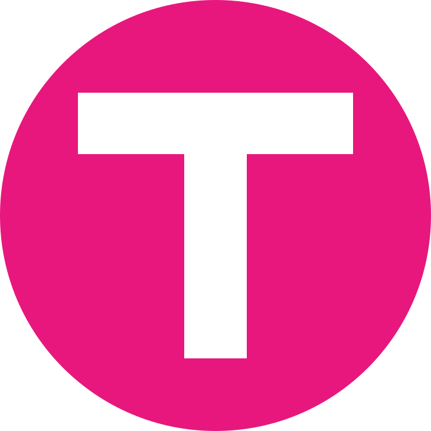

Music worth sharing.
Your song.
Their app.
Send a song they can open on Apple Music, Spotify, TIDAL, or YouTube Music.

A little something for you
Open it to explore TuneTransit.

TuneTransitMusic worth sharing.
Send a song they can open on Apple Music, Spotify, TIDAL, or YouTube Music.

A little something for you
Open it to explore TuneTransit.